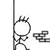

做个与五子棋有关的小游戏，有点简单。。。别有鸭梨
#1 做个与五子棋有关的小游戏，有点简单。。。别有鸭梨作者：右岸之风 发表时间：2011-10-31 13:40:11
说出带有“五”的成语，同音字不算，有人说过的不算，简单吧。。。
开始，我先来：
五颜六色、五彩缤纷、五味俱全、五马分尸、一五一十、五大三粗、九五之尊、九五至尊、五毒俱全、五音不全，五花大绑，学富五车，五体投地，五光十色、五湖四海，四分五裂，四书五经，五短身材，三皇五帝，五谷不分，朝九晚五，五脏六腑，五内俱焚，五彩斑斓，五蕴皆空，三山五岳，五指连心，五谷丰登，
#2 Re:做个与五子棋有关的小游戏，有点简单。。。别有鸭梨作者：掌棋宣传员 发表时间：2011-10-31 13:42:38
 我还以为是个小程序呢...抱着测试棋力的心态进来的....
我还以为是个小程序呢...抱着测试棋力的心态进来的....［ 右岸之风 于 2011-10-31 13:47:42 时花20金币送鲜花一朵］
#3 Re:Re:做个与五子棋有关的小游戏，有点简单。。。别有鸭梨作者：右岸之风 发表时间：2011-10-31 13:48:13
引用：
原文由 掌棋宣传员 发表于 2011-10-31 13:42:38 :［ 右岸之风 于 2011-10-31 13:47:42 时花20金币送鲜花一朵］
哈哈
#4 Re:做个与五子棋有关的小游戏，有点简单。。。别有鸭梨作者：掌棋如烟 发表时间：2011-10-31 14:12:48
本来不想回贴的，因为我所有知道的成语都被你说过了，可是看到你送花了，我抱着领花的心思来的....为了跟你的主题有点贴近，我说个“五五25”
［ 右岸之风 于 2011-10-31 14:13:48 时花20金币送鲜花一朵］
#5 Re:Re:做个与五子棋有关的小游戏，有点简单。。。别有鸭梨作者：右岸之风 发表时间：2011-10-31 14:14:59
引用：
原文由 掌棋宣传员 发表于 2011-10-31 13:42:38 :［ 右岸之风 于 2011-10-31 13:47:42 时花20金币送鲜花一朵］
老大，老大远来了，也说个成语呗？不会想不出来吧。。。这个有难度？
#6 Re:做个与五子棋有关的小游戏，有点简单。。。别有鸭梨作者：五子酷 发表时间：2011-10-31 14:15:01
五星连珠 ！ 我要花！
我要花！
［ 右岸之风 于 2011-10-31 14:16:54 时花20金币送鲜花一朵］
［ 聚贤联盟特使 于 2011-10-31 14:50:08 时花20金币送鲜花一朵］
#7 Re:Re:做个与五子棋有关的小游戏，有点简单。。。别有鸭梨作者：右岸之风 发表时间：2011-10-31 14:20:51
引用：
原文由 掌棋如烟 发表于 2011-10-31 14:12:48 :本来不想回贴的，因为我所有知道的成语都被你说过了，可是看到你送花了，我抱着领花的心思来的....为了跟你的主题有点贴近，我说个“五五25”
［ 右岸之风 于 2011-10-31 14:13:48 时花20金币送鲜花一朵］
领班姐姐，这个是成语吗？
#8 Re:Re:做个与五子棋有关的小游戏，有点简单。。。别有鸭梨作者：小红眼镜 发表时间：2011-10-31 14:34:59
引用：同上。。。。。。。。。。。。
原文由 掌棋宣传员 发表于 2011-10-31 13:42:38 :［ 右岸之风 于 2011-10-31 13:47:42 时花20金币送鲜花一朵］

［ 聚贤联盟特使 于 2011-10-31 14:48:40 时花20金币送鲜花一朵］
［ 聚贤联盟特使 于 2011-10-31 14:48:46 时花20金币送鲜花一朵］
［ 聚贤联盟特使 于 2011-10-31 14:48:48 时花20金币送鲜花一朵］
#9 Re:Re:Re:做个与五子棋有关的小游戏，有点简单。。。别有鸭梨作者：聚贤联盟特使 发表时间：2011-10-31 14:49:43
引用：
原文由 小红眼镜 发表于 2011-10-31 14:34:59 :引用：同上。。。。。。。。。。。。
原文由 掌棋宣传员 发表于 2011-10-31 13:42:38 :［ 右岸之风 于 2011-10-31 13:47:42 时花20金币送鲜花一朵］
［ 聚贤联盟特使 于 2011-10-31 14:48:40 时花20金币送鲜花一朵］
［ 聚贤联盟特使 于 2011-10-31 14:48:46 时花20金币送鲜花一朵］
［ 聚贤联盟特使 于 2011-10-31 14:48:48 时花20金币送鲜花一朵］
留下个成语，再走。。。
#10 Re:Re:做个与五子棋有关的小游戏，有点简单。。。别有鸭梨作者：聚贤联盟特使 发表时间：2011-10-31 14:50:51
引用：
原文由 五子酷 发表于 2011-10-31 14:15:01 :五星连珠 ！
［ 右岸之风 于 2011-10-31 14:16:54 时花20金币送鲜花一朵］
［ 聚贤联盟特使 于 2011-10-31 14:50:08 时花20金币送鲜花一朵］
这个是成员么？疑惑中。。
#11 Re:做个与五子棋有关的小游戏，有点简单。。。别有鸭梨作者：聚贤联盟特使 发表时间：2011-10-31 14:52:26
看到3吧肥硕的威望，有个打劫的恶念。。。表示一直为威望奋斗。。20个啊20个
#12 Re:做个与五子棋有关的小游戏，有点简单。。。别有鸭梨作者：掌棋宣传员 发表时间：2011-10-31 14:59:46
相传五子棋起源于中国，那么五子棋的精髓是什么?彭建国老师说，五子棋表示五常——“仁、义、礼、智、信”，你认为呢？
五子连珠的“五”实在是恰到好处，如是“四”则先手轻易取胜，如是“六”则难分胜负。
中国人很早就用“五”来总结社会现象。经“稻子香了”、“维生素sars”、“天使的女佣”、“怡红山庄之大漠”、“enos”总结归纳，经“奔驰”、“failer”、“谁共我*醉明月”、“踢社王☆六十六号”等朋友补充添加，现整理成集，列出以娱。
五常：仁、义、礼、智、信(封建礼教提倡的人与人之间的道德规范。成语“三纲五常”，“三纲”指君为臣纲，父为子纲，夫为妻纲)
五伦：君臣、父子、夫妇、兄弟、朋友(封建宗法社会的五种伦理关系)
五纪：岁、月、日、星辰、历数，(此谓天时也)
远五朝：夏、商、周、秦、汉
近五朝：唐、宋、元、明、清
五代：梁、唐、晋、汉、周(继唐之后的后梁、后唐、后晋、后汉、后周相继统治中原,公元907～960年)
五胡：匈奴、羯、鲜卑、氐、巴(西晋消亡后，北方这五个少数民族拉开了大争战的帷幕，史称“五胡乱华”，最后形成了南北朝时期的北朝朝廷)
五经：《诗》、《书》、《礼》、《易》、《春秋》(儒家经典。成语有“四书五经”四书即《大学》、《中庸》、《论语》、《孟子》)
五带：北寒带、北温带、热带、南温带、南寒带
五洲：亚洲、欧洲、美洲、大洋洲、非洲
五岳：东岳泰山、西岳华山、南岳衡山、北岳恒山、中岳嵩山(成语“三山五岳”)
五岭：越城岭、都庞岭、萌渚岭、骑田岭、大庾岭(均在湖南、江西南部和广西、广东北部交界处，毛主席诗句“五岭逶迤腾细浪”)
五陵：长陵、安陵、阳陵、茂陵、平陵(汉代五个皇帝的陵墓，在长安附近。当时富家豪族和外戚都居住在五陵附近，因此后世诗文常以五陵为富豪人家聚居长安之地)
五湖：洞庭湖、鄱阳湖、太湖、巢湖、洪泽湖(成语“五湖四海”)
五坛：天坛、地坛、日坛、月坛、先农坛(北京皇帝祭祀天地日月的场所，先农坛是皇帝躬亲农事的祭坛)
五门：皋门、雉门、库门、应门、路门。
五府：神斗、天府、世室、重屋、明堂。（五帝的祭祀宗祠：黄曰神斗、唐虞谓之天府，夏谓之世室，殷谓之重屋，周谓之明堂）
五行：金、木、水、火、土(万源之本)
五轮：地、水、火、风、空 (祥见：宫本武藏--《五轮书》)
五方：东、西、南、北、中
五彩、五颜、五光：青、黄、赤、白、黑(成语“五彩缤纷、五颜六色、五光十色”)
五金：金、银、铜、铁、锡
五刃：刀、剑、矛、戟、矢。
五化：生、长、化、收、藏
五气：风、暑、湿、燥、寒
五官：耳、眼、鼻、口、舌
五脏：心、肝、脾、胃、肾(成语“五脏俱焚”)
五腑(西医)：胆、小肠、胃、大肠、膀胱(加“三焦”为中医的六腑，西医没有这个名称，中医则认为三焦是一个重要的腑。)
五体：头、左肘、右肘、左膝、右膝(成语“五体投地”)
五肢：头、左手、右手、左脚、右脚(成语“五大三粗”、“五短身材”，还有一个比较恐怖的：“五马分尸”)
五拜：天、地、君、亲、师
五形体：筋、脉、肉、皮、骨
五脉：弦、洪、缓、浮、沉
五指：拇指、食指、中指、无名指、小指
五液：汗、涕、泪、涎、唾
五变动：握、忧、哕、咳、栗
五主：色、嗅、味、声、液
五声：呼、笑、歌、哭、呻
五音：宫、商、角、徵、羽
五发音：喉音、牙音、舌音、齿音、唇音(音韵学上指五类声母的五类发音部位)
五元音：a、e、i、o、u
五笔：一、丨、丿、丶、乙(即横、竖、撇、捺、折，五笔字型)
五味：甜、酸、苦、辣、咸(成语“五味俱全”)
五嗅：臊、焦、香、腥、腐
五谷：稻、黍、稷、麦、菽(成语“五谷丰登”)
五灵：龙、凤、麟、龟、白虎。
五毒：蛇、蝎、蜈蚣、壁虎、蟾蜍(成语“五毒俱全”)
五恶： 一曰心逆而险.二曰行辟而坚.三曰言伪而辩.四曰记丑而博.五曰顺非而泽（祥解见：《始诛》）
五虫：裸虫、毛虫、羽虫、介虫、鳞虫(古时人们对世间动物的分类)
五香：花椒、八角、桂皮、丁香花蕾、茴香子
五荤：大蒜、韭菜、薤、葱、兴渠(根像萝卜，气味像蒜)(佛教指五种有辛辣味的蔬菜)
五供：香炉、左右烛台、一香筒、一灯盏(祭祀时放供品的器皿)
五戒：不杀生,不偷盗,不邪淫,不妄语,不饮酒(佛教中在家的男女教徒所应遵守的五项戒律)
五时八教：(五时)--华严时、阿含时、方等时、般若时、法华涅槃(八教解释起来太麻烦，又与本贴无关，故不表)
五蕴：色、受、想、行、识(佛教指人的五种刹那变化的成分，由这五种成分的暂时结合而形成了个我)
五事：貌、言、视、听、思。
五德：温、良、恭、俭、让(温和、善良、恭敬、节俭、忍让五种美德，是儒家提倡待人接物的准则。)
五
#13 Re:Re:Re:做个与五子棋有关的小游戏，有点简单。。。别有鸭梨作者：掌棋如烟 发表时间：2011-10-31 15:00:00
引用：
原文由 右岸之风 发表于 2011-10-31 14:20:51 :领班姐姐，这个是成语吗？
恩，乖，这个是算术，姐上学时候背99乘法表，背的不是很溜。。。所以现在一做测智商的题目时，都无奈的趴在了数字问题上，把姐原本高人一等的IQ值硬是拉到了普通偏上一档，所以姐只能嫁了一个比我更弱的老公，姐夫在家庭斗地主算分的时候，两位数的加减法，屡次算错，是屡次！！等他算对时，我们一把牌都打完了。。。
#14 Re:做个与五子棋有关的小游戏，有点简单。。。别有鸭梨作者：梧桐风 发表时间：2011-10-31 15:10:40
所以姐只能嫁了一个比我更弱的老公，夫在家庭斗地主算分的时候，两位数的加减法，屡次算错，是屡次！！
亮点~
#15 Re:做个与五子棋有关的小游戏，有点简单。。。别有鸭梨作者：以和为贵 发表时间：2011-10-31 15:28:12
五花八门#16 Re:做个与五子棋有关的小游戏，有点简单。。。别有鸭梨作者：小丸.net 发表时间：2011-10-31 19:08:51
俺也风光一回，当年的全国亚军是俺的手下败将，而且对他保持全胜。。。。
#17 Re:做个与五子棋有关的小游戏，有点简单。。。别有鸭梨作者：右岸之风 发表时间：2011-10-31 19:19:38
12楼，果断是镇楼之宝啊
弱弱问下，老大是传说中的九指大师么？
#18 Re:Re:Re:Re:做个与五子棋有关的小游戏，有点简单。。。别有鸭梨作者：右岸之风 发表时间：2011-10-31 19:21:33
引用：
原文由 掌棋如烟 发表于 2011-10-31 15:00:00 :引用：
原文由 右岸之风 发表于 2011-10-31 14:20:51 :领班姐姐，这个是成语吗？
恩，乖，这个是算术，姐上学时候背99乘法表，背的不是很溜。。。所以现在一做测智商的题目时，都无奈的趴在了数字问题上，把姐原本高人一等的IQ值硬是拉到了普通偏上一档，所以姐只能嫁了一个比我更弱的老公，姐夫在家庭斗地主算分的时候，两位数的加减法，屡次算错，是屡次！！等他算对时，我们一把牌都打完了。。。
好弱的姐夫啊
花花都送12楼了，等攒够了钱补上
#19 Re:Re:做个与五子棋有关的小游戏，有点简单。。。别有鸭梨作者：右岸之风 发表时间：2011-10-31 19:22:40
引用：
原文由 以和为贵 发表于 2011-10-31 15:28:12 :
五花八门
这个算
#20 Re:Re:做个与五子棋有关的小游戏，有点简单。。。别有鸭梨作者：右岸之风 发表时间：2011-10-31 19:24:12
引用：
原文由 小丸.net 发表于 2011-10-31 19:08:51 :俺也风光一回，当年的全国亚军是俺的手下败将，而且对他保持全胜。。。。
这个和成语啥关系？ 冠军姓五？五连胜？
冠军姓五？五连胜？
#21 Re:Re:做个与五子棋有关的小游戏，有点简单。。。别有鸭梨作者：右岸之风 发表时间：2011-10-31 19:25:19
引用：
原文由 梧桐风 发表于 2011-10-31 15:10:40 :所以姐只能嫁了一个比我更弱的老公，夫在家庭斗地主算分的时候，两位数的加减法，屡次算错，是屡次！！
亮点~
够亮
#22 Re:做个与五子棋有关的小游戏，有点简单。。。别有鸭梨作者：与郎共五 发表时间：2011-10-31 19:25:50
哈哈！与郎共五。唯一［ 聚贤联盟特使 于 2011-11-1 12:20:52 时花20金币送鲜花一朵］
［ 聚贤联盟特使 于 2011-11-1 12:20:55 时花20金币送鲜花一朵］
［ 聚贤联盟特使 于 2011-11-1 12:20:57 时花20金币送鲜花一朵］
#23 Re:Re:做个与五子棋有关的小游戏，有点简单。。。别有鸭梨作者：蓝天蓝 发表时间：2011-10-31 21:01:53
引用：虽然不是这样想的，但是内容却是出乎我的意料了
原文由 掌棋宣传员 发表于 2011-10-31 13:42:38 :［ 右岸之风 于 2011-10-31 13:47:42 时花20金币送鲜花一朵］
［ 聚贤联盟特使 于 2011-11-1 12:22:49 时花20金币送鲜花一朵］
［ 聚贤联盟特使 于 2011-11-1 12:22:51 时花20金币送鲜花一朵］
［ 聚贤联盟特使 于 2011-11-1 12:22:53 时花20金币送鲜花一朵］
#24 Re:Re:Re:Re:做个与五子棋有关的小游戏，有点简单。。。别有鸭梨作者：小红眼镜 发表时间：2011-11-1 0:15:03
引用：
原文由 聚贤联盟特使 发表于 2011-10-31 14:49:43 :引用：
原文由 小红眼镜 发表于 2011-10-31 14:34:59 :引用：同上。。。。。。。。。。。。
原文由 掌棋宣传员 发表于 2011-10-31 13:42:38 :［ 右岸之风 于 2011-10-31 13:47:42 时花20金币送鲜花一朵］
［ 聚贤联盟特使 于 2011-10-31 14:48:40 时花20金币送鲜花一朵］
［ 聚贤联盟特使 于 2011-10-31 14:48:46 时花20金币送鲜花一朵］
［ 聚贤联盟特使 于 2011-10-31 14:48:48 时花20金币送鲜花一朵］
留下个成语，再走。。。
五连算赢。。。。。。［ 聚贤联盟特使 于 2011-11-1 12:23:17 时花20金币送鲜花一朵］
［ 聚贤联盟特使 于 2011-11-1 12:23:19 时花20金币送鲜花一朵］
［ 聚贤联盟特使 于 2011-11-1 12:23:21 时花20金币送鲜花一朵］
［ 聚贤联盟特使 于 2011-11-1 12:23:22 时花20金币送鲜花一朵］
#25 Re:做个与五子棋有关的小游戏，有点简单。。。别有鸭梨作者：偶是逆风独立 发表时间：2011-11-1 12:14:09
五连算赢
-----------------------------
嘿嘿，笨3吧，这个不算，自己造词
#26 Re:做个与五子棋有关的小游戏，有点简单。。。别有鸭梨作者：南京小飞机 发表时间：2011-11-1 12:41:27
五谷杂粮#27 Re:做个与五子棋有关的小游戏，有点简单。。。别有鸭梨作者：老黄 发表时间：2011-11-1 12:58:57
5姑娘V5#28 Re:做个与五子棋有关的小游戏，有点简单。。。别有鸭梨作者：蓝天蓝 发表时间：2011-11-1 13:07:02
三令五申 五花大绑 五短身材 五步成诗 五尺之童#29 Re:做个与五子棋有关的小游戏，有点简单。。。别有鸭梨作者：吉小鼠 发表时间：2011-11-1 13:37:20
五福临门